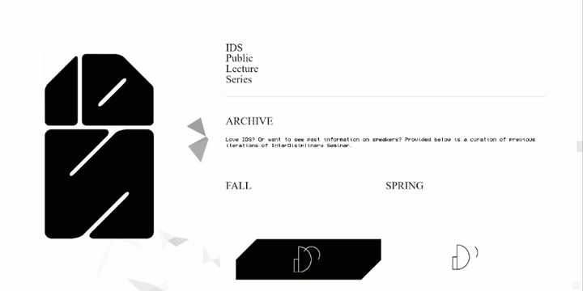
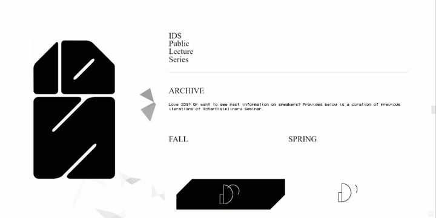

Intra-Disciplinary Seminar
Web Design and Visual Identity

Desktop version of landing page. Background rendering responds to mouse navigation.
Designed as an introduction to some of the most pressing questions driving contemporary thought and practice, the Intra-Disciplinary Seminar at the Cooper Union (IDS) consists of talks by artists, theorists, scientists, activists, writers, and other practitioners involved in the arts from positions that embody an interdisciplinary approach or that imply new uses for disciplinary traditions.
IDS logo. Horizontal version.
The seminar is now defunct. The following is from when it was currently active. Information on archived materials available below.
The Fall 2022 IDS lectures will take place in the Rose Auditorium at The Cooper Union, on Thursdays at 7pm EST, unless otherwise specified. They are free and open to the public upon proof of vaccination and booster, and use of a CDC-recommended mask. Please subscribe to our mailing list for weekly notifications.
The IDS public lecture series is part of the Robert Lehman Visiting Artist Program at The Cooper Union. We are grateful for major funding from the Robert Lehman Foundation. The IDS public lecture series is also made possible by generous support from the Open Society Foundations.
IDS is organized by Leslie Hewitt and Omar Berrada.
Design by Amanda Blanca (social media, visual idenity), Orchid Sylvester (web design, visual identity), and Sam Yoon (poster design, visual identity).
The IDS visual identity in print and digital form were conceived and developed by Cooper Union design students for each season. Both analog and digital ephemera are available to view as part of this archive.
 
